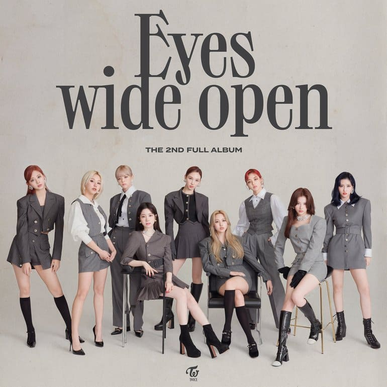

Albumes
Acá encontrarás toda la información sobre la discografía coreana de Twice
The Story Begins (2015)
Es el primer mini-álbum de Twice, con el mismo empezaron su carrera como girl group coreano. El mismo está compuesto por 6 canciones y su Title Track es Like Ohh-Ahh.

- Like Ohh-Ahh
- Do It Again
- I Think I'm Crazy
- Truth
- Candy Boy
- Like a Fool
Page Two (2016)
Es el segundo mini-álbum de Twice, el mismo contiene un total de 6 canciones, con su Title Track CHEER UP. Esta canción fue un gran salto de la carrera de Twice ganando así un montón de popularidad.

- CHEER UP
- Precious Love
- Touchdown
- Tuk Tok
- Woohoo
- My Headphones on
TWICEcoaestar: Lane 1 (2016)
Es su tercer mini-álbum, el mismo está conformado por 7 canciones, con su Title Track TT
- TT
- 1 to 10
- PonyTail
- Jelly Jelly
- Pit-a-Pat
- Next Page
- One In A Million
TWICEcoaestar: LANE 2 (2017)
Fue su primer Álbum completo, el cual fue lanzado en el 2017 con su Title Track Knock Knock
- Knock Knock
- Ice Cream
- TT
- 1 TO 10
- Ponytail
- Jelly Jelly
- Pit-A-Pat
- Next Page
- One In A Million
Signal(2017)
Es su cuarto mini-álbum, el mismo está compuesto por 6 canciones y su Title Track es Signal

- Signal
- Three Times A Day
- Only You
- Hold Me Tight
- Eyes Eyes Eyes
- Someone Like Me
Twicetegram (2017)
Es su segundo álbum completo, conteniendo así un total de 12 canciones con su Title Track Likey

- Likey
- Turtle
- Missing U
- Wow
- FFW
- Ding Dong
- Look At Me
- Rollin'
- Love Line
- Don't Give Up!
- Having You
- Sleep Tight, Good Night
Merry & Happy (2017)
Un álbum especial que sacaron con tématica navideña. El mismo contiene un total de 15 canciones con su Title Track Heart Shaker
- Heart Shaker
- Merry & Happy
- Likey
- Turtle
- Missing U
- Wow
- FFW
- Ding Dong
- 24/7
- Look At Me
- Rollin'
- Love Line
- Don't Give Up!
- Having You
- Sleep Tight, Good Night
What Is Love (2018)
En 2018 Twice tiene su primer comeback con su cuarto mini-álbum, con su Title Track What Is Love?. Este EP está compuesto por 6 canciones.
- What Is Love?
- SWEET TALKER
- HO!
- DEJAVU
- SAY YES
- STUCK
Summer Nights (2018)
El segundo comeback del 2018 fue con Summer Nights, álbum compuesto por 9 canciones, con su Title Track Dance The Night Away.
- Dance The Night Away
- CHILLAX
- Shot Thru The Heart
- What Is Love?
- SWEET TALKER
- HO!
- DEJAVU
- SAY YES
- STUCK
YES or YES (2018)
Su tercer comeback del 2018 compuesto por su mini-álbum YES or YES, con su Title Track YES or YES, conteniendo así 7 canciones

- YES or YES
- SAY YOU LOVE ME
- LALALA
- YOUNG & WILD
- SUNSET
- AFTER MOON
- BDZ (Korean Version)
The Year of "YES" (2018)
Para despedir el 2018 sacaron un álbum especial compuesto por 9 canciones con su Title Track The Best Thing I Ever Did
- The Best Thing I Ever Did
- Be As One (Korean Version)
- YES or YES
- SAY YOU LOVE ME
- LALALA
- YOUNG & WILD
- SUNSET
- AFTER MOON
- BDZ (Korean Version)
FANCY YOU (2019)
Comenzando el 2019 las chicas volvieron con un mini-álbum compuesto por 6 canciones, siendo así su Title Track FANCY. Este álbum fue una revolución total en su carrera, ya que con el mismo dejaron el concepto cute por uno más maduro.

- FANCY
- STUCK IN MY HEAD
- GIRLS LIKE YOU
- HOT
- TURN IT UP
- STRAWBERRY
Feel Special (2019)
Su segundo comeback en el 2019 fue con su mini-álbum Feel Special, el cual tiene el Title Track con el mismo. Contiene 6 canciones. nombre.
- Feel Special
- Rainbow
- Get Loud
- Trick It
- Love Foolish
- Breakthrough (Korean Version)
MORE & MORE (2020)
Su primer comeback en el 2020 fue con este mini-álbum que contiene 7 canciones y su Title Track es MORE & MORE
- MORE & MORE
- OXYGEN
- FIREWORK
- MAKE ME GO
- SHADOW
- DON'T CALL ME AGAIN
- SWEET SUMMER DAY
Eyes Wide Open (2020)
Su segundo comeback del año 2020 fue con un álbum completo, el mismo contiene 13 canciones y su Title Track es I CAN'T STOP ME
- I CAN'T STOP ME
- HELL IN HEAVEN
- UP NO MORE
- DO WHAT WE LIKE
- BRING IT BACK
- BELIEVER
- GO HARD
- SHOT CLOCK
- HANDLE IT
- DEPEND ON YOU
- SAY SOMETHING
- BEHIND THE MASK
Taste Of Love (2021)
Su primer comeback en el 2021 fue con este mini-álbum compuesto por 6 canciones y su Title Track es Alcohol-Free

- Alcohol-Free
- First Time
- Scandal
- Conversation
- Baby Blue Love
- SOS
Formula of Love: O+ T=<3 (2021)
El segundo comeback del 2021 fue con su tercer álbum completo, el mismo contiene un total de 15 canciones y su Title Track es SCIENTIST. Este álbum a su vez es especial porque contiene las primeras canciones en subunidades
- SCIENTIST
- MOONLIGHT
- ICON
- CRUEL
- REAL YOU
- F.I.L.A (Fall In Love Again)
- LAST WALTZ
- ESPRESSO
- REWIND
- CACTUS
- PUSH & PULL (JIHYO, SANA & DAHYUN)
- HELLO (NAYEON, MOMO & CHAEYOUNG)
- 1, 3, 2 (JEONGYEON, MINA & TZUYU)
- CANDY
- The Feels